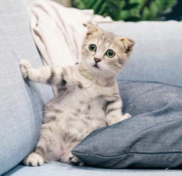

Os gatos são animais incríveis e fascinantes. Eles são conhecidos por serem independentes, mas também gostam muito de receber carinho e atenção. Além disso, os gatos são animais muito inteligentes e curiosos, sempre explorando e descobrindo coisas novas.
Curiosidades sobre gatos
Os gatos são animais cheios de mistérios e curiosidades. Por exemplo, você sabia que os gatos têm cerca de 100 sons diferentes para se comunicar? Eles também têm habilidades incríveis de caça, graças à sua excelente visão e audição aguçadas. Outra curiosidade interessante é que, ao contrário do que muita gente pensa, os gatos não enxergam em preto e branco, eles conseguem enxergar cores, mas não tantas como nós.
| Raças de gatos | Características |
|---|---|
| Siamês | Pelagem curta, olhos azuis, vocaliza bastante |
| Persa | Pelagem longa, rosto achatado, tranquilo |
| Bengal | Pelagem com manchas, gosta de água, bastante ativo |
| Maine Coon | Grande porte, pelagem densa, sociável |
| Scottish Fold | Orelhas dobradas para baixo, pelagem densa, carinhoso |
- Gatos são animais independentes, mas também gostam de receber carinho e atenção.
- Os gatos têm habilidades incríveis de caça, graças à sua excelente visão e audição aguçadas.
- Os gatos são excelentes companheiros para pessoas que vivem em apartamentos, pois são animais que se adaptam bem a espaços pequenos.
- Gatos são animais muito limpos e passam boa parte do dia se lambendo.
- A expectativa de vida dos gatos pode variar entre 10 e 20 anos, dependendo da raça e dos cuidados recebidos.
- Ao contrário dos cães, os gatos não precisam ser passeados, pois fazem suas necessidades dentro de casa.